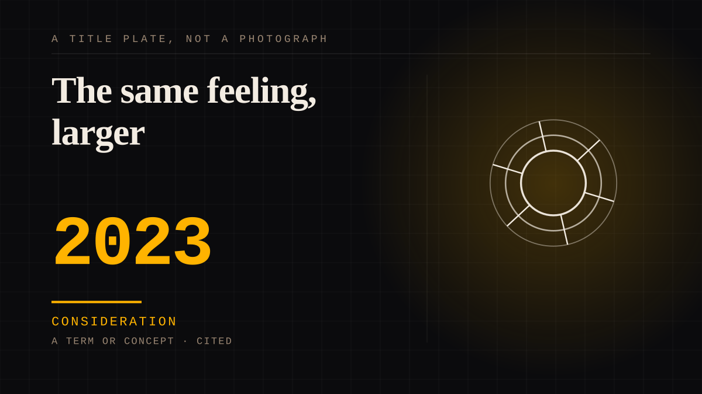

A term or concept · 2023 · AI
The same feeling, larger
Nothing about the bond is new. The scale, the persistence, the responsiveness, the willingness of companies to act on it as a measurable and monetisable quantity - those are new.

The defensible summary of the last twenty years. Every claim that we are undergoing a parasocial crisis is either wrong about the feeling or right about the metering. The feeling is at least six hundred years old and about as common as rain. The meter is the news.
Consideration. The part where somebody stops and thinks. The research, the diagnosis, the ethics, the lawsuits, the regulators. Roughly fifty years of arguing with itself about whether this is a relationship.
Manipulation. One-sided attachment engineered for somebody else's benefit. Paid intimacy, parasocial persuasion, sasaeng, grief extraction, the streak. The lane that pays the bills and the lane that causes the most harm, frequently at the same time.
Where it sits
2010 2010+ · 2023 2026
Connected · 2 out, 2 in
Reported as a story
It sits in